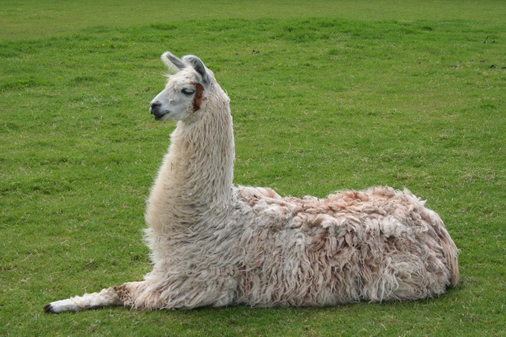
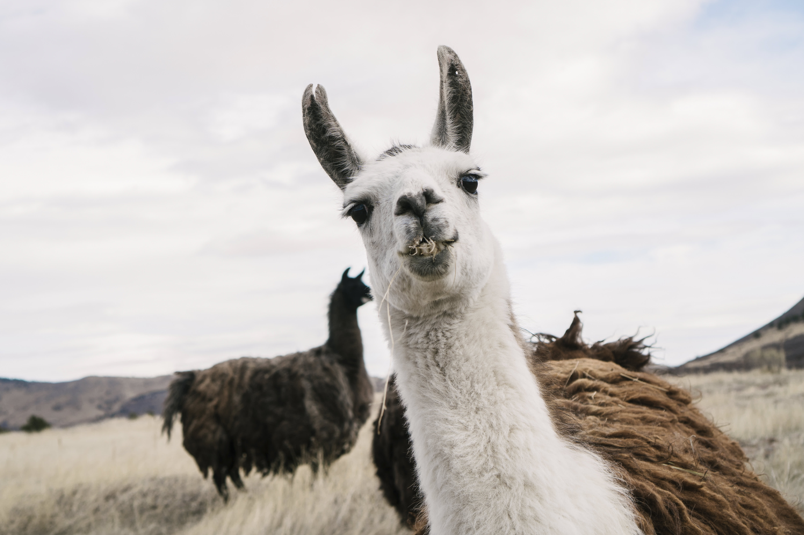
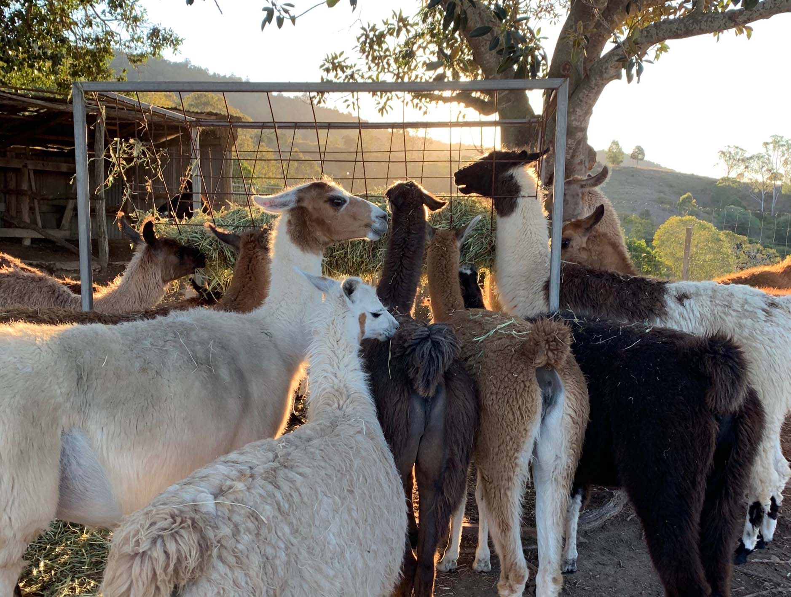
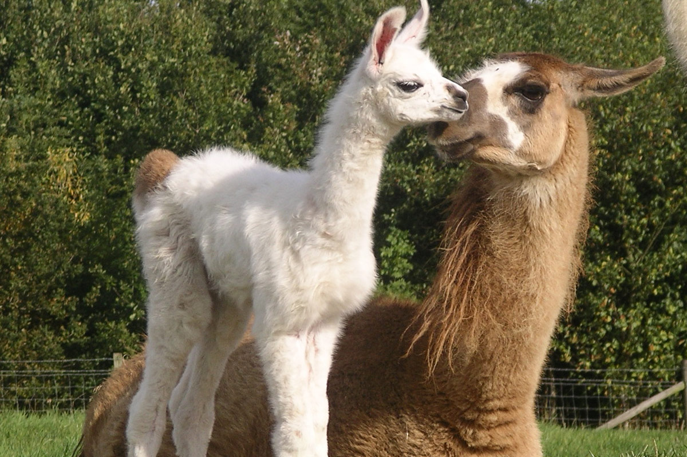

Nomadic ZOO and healing therapy
Although we don't think about it in everyday life, lack of animals and especially llamas jeopardizes our health and well-being. Everyone could use someone fluffy and cute near them from time to time.

World around us is stressful, the work, the noise and other people, it all takes its toll on our mental health. When you feel your sanity is on its last legs a llama is all you need. The sole contact with them is distressing, not to mention they are great listeners, you can vent on them your problems.

Inside the steel bodies of monsters we came to call cities people lack contact with nature. Psychiatrists say out loud what that leads too. The writing is on the wall so don't wait and come to us when we are near your city to breath fresh air and rest among the great creatures.

If you lack interesting thing to do with your family, a trip to the healing llamas is a perfect getaway for you. The kids will love seeing llamas and adults will get a moment of tranquility.
